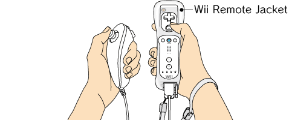

3 |
Controller Setup |
 |
How to hold the controllers depends on whether you are using the Wii Remote by itself or in combination with other accessories.
Note: For information about how to attach the wrist strap and how to connect the various accessories, refer to the Wii Operations Manual – System Setup or the instruction manuals for each controller.
When using the Nunchuk

The Nintendo GameCube™ Controller can also be used.
If the buttons or sticks on a Nunchuk, Classic Controller, or Nintendo GameCube Controller are moved out of neutral position (see below) when the power is turned on, or when connecting to the Wii Remote (if applicable), that position will be set as neutral position, causing incorrect game control during game play. To reset neutral position for these controllers, do the following:
The neutral position is where no control sticks are tilted and no buttons are being pressed, as shown:
|

 ,
,  ,
,  and
and  on the connected Wii Remote for approximately three seconds.
on the connected Wii Remote for approximately three seconds.


 |
 |
 |